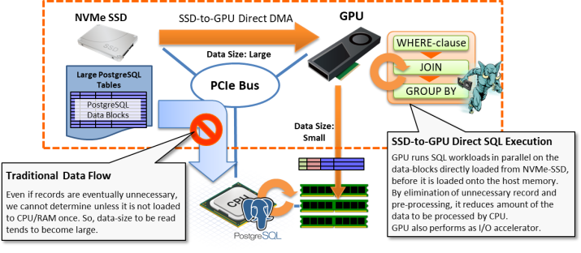

HeteroDB released PG-Strom products for GPU acceleration of database workloads
18-Apr-2018 (Wed)
Today, HeteroDB,Inc (Shinagawa-ku, Tokyo, Japan, CEO: KaiGai Kohei) released subscription products of PG-Strom which is GPU accelerated database technology, and appliance server product with this software.
PG-Strom which pull out maximum capability of the least hardware, offers DWH-class performance with 1U/2U rack server.
PG-Strom is an extension module designed for PostgreSQL which is one of the most successful open source relational database management system. It automatically generates GPU programs from SQL commands, and runs SQL workloads in parallel using a few thousand cores and high-bandwidth memory of GPU, so accelerates reporting and analytics workloads to big-data.

SSD-to-GPU Direct SQL Execution, a part of core features, directly loads data blocks of PostgreSQL on NVMe-SSD to GPU, then runs SQL workloads on the GPU prior to the data arrival at the host system. It enables to reduce amount of the data to be processed by CPU less than a few hundredth of the original, thus runs I/O intensive workloads like reporting queries or full-table scans much efficiently.

PG-Strom is implemented on top of the internal APIs officially supported by PostgreSQL only, so it looks like a vanilla PostgreSQL system from the standpoint of users and applications. No special tuning and configurations are needed because its optimizer determines whether GPU shall be utilized according to the characteristics of the query. In addition, it can perform on transactional data (row-format) also, no need to convert the data format between transactional system and information system.
By the enhancement of sufficient performance to single node PostgreSQL which is the simplest configuration, it allows to design application more and more simple, and also allows to reduce daily database administration jobs.
Appliance model optimized for PG-Strom
We simultaneously release an appliance server product which consists of optimal hardware components and validated as a platform of the various acceleration features of PG-Strom.

| HeteroServer GS120-P40 | |
|---|---|
| CPU | Intel Xeon Gold 6126T (12C, 2.6GHz) x1 |
| RAM | DDR4-2666 32GB x 6 (total 192GB) |
| GPU | NVIDIA TESLA P40 (3840C, 24GB) |
| SSD | Intel SSD DC P4600 (2.0TB; HHHL) |
| HDD | 2.0TB (SATA; 7.2krpm) x6 |
| Network | 10Gb Ethernet x2 ports |
Major usage of PG-Strom
- Data Ware House / Data Mart
- Batch Jobs / Reporting
- Log data analytics platform
- Anomaly detection system platform
- Statistical analytics / machine-learning platform
Features and characteristics of PG-Strom
- Works as a part of PostgreSQL, thus full compatibility of data and query
- Transparent SQL acceleration with GPU and auto-generated programs
- SSD-to-GPU Direct SQL Execution
- In-memory columnar cache
- GPU memory store (gstore_fdw)
- PL/CUDA user defined function
List of the new products
- Software Subscription Products
- PG-Strom Enterprise Subscription (1GPU, 1 year)
- PG-Strom Enterprise Subscription (1GPU, 3 year)
- Appliance Server Products
- HeteroServer GS120-P40
- Software subscription products can be used on only validated hardware / software configuration.
- Open price for all the products
Contact about this news
- HeteroDB,Inc
- e-mail: contact@heterodbcom
- tel: +81(36429)9607
- location: 1-1-2-206, Nishiooi, Shinagawa-ku, Tokyo, Japan
HeteroDB got the best startup award at GTCJapan, Inception Startup AI summit
13-Dec-2017 (Wed)
At the GPU Technology Conference Japan 2017 (hereafter; GTCJapan), held from 12-Dec to 13-Dec-2017, 19 domestic startups in the machine-learning and data-science field had presentations for their own businesses and technologies, then, we could get the award of the highest prize.
Also, in the poster session of the GTCJapan, our poster titled as "PL/CUDA - In-database massive parallel analytics", by KaiGai Kohei (CEO of HeteroDB,Inc), got the award of the best poster in the five finalist, determined by the voting of participants.
It is very honor thing to get these award in GTCJapan, which is the largest conference in the GPU technology field, towards what we have worked for long days - acceleration of large data processing by GPU and in-database analytics that expands database usages.
HeteroDB will continue to work on technology and product development in order to meet the expectations of users and everyones involved.
Contact about this news
- HeteroDB,Inc
- e-mail: contact@heterodbcom
- tel: +81(36429)9607
- location: 1-1-2-206, Nishiooi, Shinagawa-ku, Tokyo, Japan
HeteroDB Joins NVIDIA Inception Startup Program
29-Sep-2017 (Fri)
HeteroDB,Inc (Shinagawa-ku, Tokyo, President: Kohei KaiGai; hereinafter HeteroDB) a leading developer and provider of high-performance database technology solution with GPUs, today announced the company has been accepted by NVIDIA Corporation (Santa Clara, CA, President & CEO: Jensen Huang; hereinafter NVIDIA) as a member of the NVIDIA Inception Program, which support startups in AI and data science.
The NVIDIA Inception Program enables HeteroDB to receive technical support including the latest GPU computing technology from NVIDIA and to conduct joint marketing activities.
HeteroDB’s core technology is the PG-Strom, which accelerates PostgreSQL’s query processing workloads, and also offers in-database analytics along with machine-learning capability. By utilizing the Inception Program, HeteroDB will strengthen the research and development for high-performance database solutions built on this core technology, optimized to the latest-generation GPUs. HeteroDB is committed in delivering the power of heterogeneous computing architecture for users around the world through databases.
NVIDIA’s Inception Program nurtures dedicated and exceptional startups who are revolutionizing industries with advances in AI and data science. A virtual accelerator program, Inception helps startups during critical stages of product development, prototyping, and deployment. Every Inception member gets a custom set of ongoing benefits, from hardware grants and marketing support to training with deep learning experts. More details about NVIDIA’s Inception program can be found at https://www.nvidia.com/en-us/deep-learning-ai/startups/.
about HeteroDB,Inc
HeteroDB,Inc is a startup for development, sales and related solutions of HeteroServer [*1] that enables to pull out maximum capability of the latest hardware like GPUs or NVMe-SSDs, so that accelerates database workloads and simplifies system operation. We are a group of professionals at GPU computing and database systems, to provide the best solution according to deep insight to customer's problem, and to contribute innovation outcomes for open source community and growth of the eco-systems.
[*1] HeteroServer: a high-performance database appliance solution which installs the latest GPU/SSD hardware and PG-Strom extension module to pull out maximum capability of them, on top of the PostgreSQL database.
Contact about this news
- HeteroDB,Inc
- e-mail: contact@heterodbcom
- tel: +81(36429)9607
- location: 1-1-2-206, Nishiooi, Shinagawa-ku, Tokyo, Japan
IPA adopted our engineer's proposition for the MITOH advanced program.
28-Jul-2017 (Fri)
Today, Information-technology Promotion Agency (IPA) announced six propositions, including "Heterogeneous In-Database Data Analytics & Machine-Learning Platform" jointly proposed by KaiGai Kohei (Chief Architect of HeteroDB), Kashiwagi Takehiko (Chief Sales Engineer of HeteroDB) and Endo Katsuhiro (Engineer of HeteroDB), get adopted to the 1st MITOH advanced program held by IPA.
about IPA MITOH advanced program
IPA MITOH advanced program is a public incubation program for individual persons who have strong motivation for startup and innovative idea (or prototype) that satisfies marketability and technology/business feasibility on IT region, through financial support and advices by project manager.
(ref: https://www.ipa.go.jp/english/humandev/third.html)
Project Overview
Project Members
- KaiGai Kohei (Chief Architect & President of HeteroDB,Inc)
- Kashiwagi Takehiko (Chief Sales Engineer & Vice-president of HeteroDB,Inc)
- Endo Katsuhiro (Keio University, department of science and technology)
Future Prospects
Hereafter, we tackles the development of PG-Strom and PL/CUDA machine-learning library that is a core feature of our HeteroServer product, and the early-adopter development through the MITOH advanced project term; from Aug-2017 to Feb-2018.
Contact about this news
- HeteroDB,Inc
- e-mail: contact@heterodbcom
- tel: +81(36429)9607
- location: 1-1-2-206, Nishiooi, Shinagawa-ku, Tokyo, Japan
HeteroDB,Inc was established
- For adoption of heterogeneous computing technology onto database area -
4-Jul-2017 (Tue)
Today, KaiGai Kohei and Kashiwagi Takehiko, who are core members of PG-Strom Development Team, established HeteroDB,Inc. The new company will provides high performance, cost effective and well administrative database product that utilizes heterogeneous computing technology, and related solution and services.
Mission of the new company
We are living in an exciting period when computer architecture is rapidly evolving once per decade. The Moore's law comes closer to its termination, processor is evolved from multi-cores to many-cores, and it becomes almost impossible to improve system performance without GPU or FPGA that are designed based on a different design concept. In case of the heterogeneous computer architecture, software cannot take a "free-lunch" of hardware evolution. Software has to be redesigned to pull out maximum performance of the hardware.
We have worked on development of "PG-Strom" which is an open source extension module to accelerate SQL workloads of PostgreSQL with GPU's parallel computing capability for more than 5 years. It is a quite exciting technology area from the standpoint of software developer. Plus, we have been supported by our vocation to deliver the power of heterogeneous computing that is a core of next generation computer architecture, through the database management system that widely supports human and society, and also through the eco-system of open source software.
HeteroDB,Inc we established today has the following three missions.
- To provide high-performance, cost-effective and well-administrative data processing platform, by the database product that embeds heterogeneous computing technology like PG-Strom.
- To be a professional on both of GPU and database; different technology areas, and to lead an optimal solution based on the insight to customer's problem.
- To contribute growth of eco-system of the open source community beyond companies, nations and technology areas, and to make our widespread innovation to the upstream.
Most of all, we are a company who makes exciting technologies products, and a company to contribute our society's improvement through the solutions towards user's problems by modern approach.
HeteroDB Overview
- Name: HeteroDB,Inc
- Established: 4-Jul-2017
- President: KaiGai Kohei
- Location: 1-1-2, Nishiooi, Shinagawa-ku, Tokyo, Japan
- Capital stock: 9.99M JPY
- Capital share: KaiGai Kohei (89.2%), Kashiwagi Takehiko (10.8%)
- URL： http://heterodb.com/
Future Prospects
The new company plans production release at Mar-2018 after the software development of PG-Strom and related, joint evaluation with early-adopter users and improvement of functionality and quality.
Contact about this news
- HeteroDB,Inc
- e-mail: contact@heterodbcom
- tel: +81(36429)9607
- location: 1-1-2-206, Nishiooi, Shinagawa-ku, Tokyo, Japan
Our research was chosen to the top-5 finalist of GTC2017 posters
8-May-2017 (Mon)

On the GPU Technology Conference 2017 held by NVIDIA (From 8th-May through 11th, 2017, San Jose), our research poster An Intelligent Storage for PostgreSQL Database was chosen to the top-5 finalist in the 140 research & development posters.
This research introduces the concept, technology overview and benchmark results of the SSD-to-GPU Direct SQL Execution feature which is one of the core functionalities of our HeteroServer product. It presents GPU devices, usually considered as an accelerator of computing intensive workloads, are also capable to work upon I/O intensive workloads using our application of GPUDirect RDMA. It is utilized to filter out unnecessary data, or to execute JOIN/GROUP BY in the middle of data flow.
- GTC 2017 Posters - ACCELERATED ANALYTICS
- P7130 - An Intelligent Storage for PostgreSQL Database[PDF]
Contact about this news
- HeteroDB,Inc
- e-mail: contact@heterodbcom
- tel: +81(36429)9607
- location: 1-1-2-206, Nishiooi, Shinagawa-ku, Tokyo, Japan